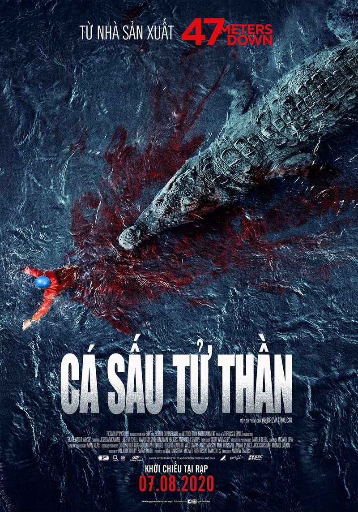

TIN LIÊN QUAN Phim kinh dị Kẻ ẩn nấp tung trailer ly kỳ rùng rợn Những siêu phẩm phim về thảm họa tận thế vẫn giữ vững độ hot Năm 2007, tác phẩm kinh dị kinh phí thấp Black Water của đạo diễn Andrew Traucki bất ngờ gây ấn tượng mạnh mẽ và trở thành tác phẩm tiêu biểu ở thể loại cá sấu ăn thịt người.
Không cần một câu chuyện phức tạp hay quá nhiều diễn viên. Black Water ghi điểm nhờ sự đơn giản nhưng hiệu quả trong việc gieo rắc nỗi sợ hãi cho người xem bằng việc để thần chết ẩn nấp dưới mặt nước nhưng không rõ là ở đâu và bao giờ thì sẽ lao tới con mồi.
Cuộc đi săn đẫm máu trong hang động cá sấu trên màn ảnh rộng - ảnh 1
Poster phim Cá sấu thử thần. Ảnh: PHP

Hơn 12 năm sau, Andrew Traucki tiếp tục thực hiện Black Water: Abyss với độ rùng rợn nhân lên gấp bội.
Ê kíp sản xuất của tác phẩm lần này là những người đã tạo nên thành công cho 47 Meters Down – tác phẩm xuất sắc ở thể loại kinh dị về cá mập.
Thám hiểm nơi hoang sơ
Lấy bối cảnh ở miền Bắc Australia với thiên nhiên hoang dã, phim xoay quanh một nhóm bạn năm người đi khám phá hang động hoang sơ chưa được nhiều người biết tới.
Eric và Jennifer là một cặp đôi yêu thích phiêu lưu mạo hiểm, thuyết phục một cặp đôi khác là Yolanda và Viktor đi tìm hiểu về một hang động rộng lớn. Một anh chàng mới quen tên là Cash làm hướng dẫn viên cho cả đội.
Cuộc đi săn đẫm máu trong hang động cá sấu trên màn ảnh rộng - ảnh 2
Hình ảnh trong phim.
Chuyến đi tưởng như hoàn hảo khi nhóm năm người tận hưởng sự choáng ngợp trong hang động khổng lồ mà dường như dân du lịch chưa ai khám phá được tới đây. Tuy nhiên, một cơn bão ập tới khiến họ không thể trở về.
Cả nhóm nghĩ rằng ẩn náu dưới lòng đất sẽ an toàn. Nhưng khi nước ngập sâu trong hang, tất cả phải đi tìm lối thoát trong bóng tối. Và đúng lúc đó, kẻ săn mồi hung tợn xuất hiện và bắt đầu cho cuộc đi săn đẫm máu dưới vùng nước tối.
Khai thác tâm lý sợ hãi
Cuộc đi săn đẫm máu trong hang động cá sấu trên màn ảnh rộng - ảnh 3 Điểm đặc sắc nhất của Black Water: Abyss là việc đạo diễn Andrew Traucki thay vì khai thác những cảnh jump-scare hù dọa người xem thì để nỗi sợ len lỏi và lớn dần lên. Khán giả sẽ có cảm giác như mình cũng là một thành viên trong nhóm bạn trẻ đang thám hiểm hang động hoang sơ của Australia. Cơn bão ập tới, cả nhóm phải trốn vào hang động và hoàn toàn xa lạ địa hình, đặc biệt là dưới nước không có ánh sáng nên không thể nhìn thấy dưới đó có gì. Chính điều này tạo nên những khoảnh khắc căng thẳng, kịch tính. Cuộc đi săn đẫm máu trong hang động cá sấu trên màn ảnh rộng - ảnh 4 Để rồi khi cá sấu khổng lồ xuất hiện, nỗi sợ hãi được đẩy lên cao trào và hoàn toàn có thể khiến người yếu bóng vía phải khiếp sợ. Hình ảnh cá sấu không hiện lên rõ ngay từ đầu phim mà phải tới giữa phim, sinh vật hung tợn này mới dần được hé lộ từ vùng nước tối. Những chi tiết bất ngờ về cách xử lý của nhóm thanh niên khi đối mặt hiểm nguy cũng được khai thác rất tốt, tạo được sự đồng cảm với người xem khi hình dung mình đang trong hoàn cảnh đó thì phải làm gì. Dàn diễn viên trẻ đẹp Black Water: Abyss quy tụ dàn diễn viên trẻ đẹp đến từ Anh và Australia. Nữ chính của phim – Jessica McNamee – có vẻ ngoài mạnh mẽ, cá tính. Những trường đoạn cô diễn xuất khi đối mặt với cá sấu tạo được không khí căng thẳng, cảm giác mạnh cho người xem. Những diễn viên còn lại như Luke Mitchell hay Amali Golden cũng là những gương mặt mới đầy hứa hẹn của thể loại phim kinh dị. Cuộc đi săn đẫm máu trong hang động cá sấu trên màn ảnh rộng - ảnh 5 Sự phối hợp ăn ý của dàn diễn viên cũng tạo dựng được cảm giác chân thực về một nhóm bạn trẻ lên đường đi du lịch, thám hiểm một vùng đất hoang sơ giống như nhiều nhóm bạn ngoài đời hiện nay. Qua đó, người xem thấy được những rủi ro khi đi du lịch và gặp phải những bất lợi về thời tiết.
H2+O2=H2O
ax2+bx+c=0
hủy cuộc hẹn